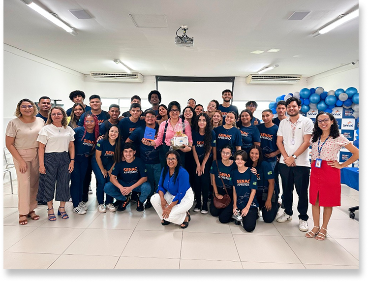
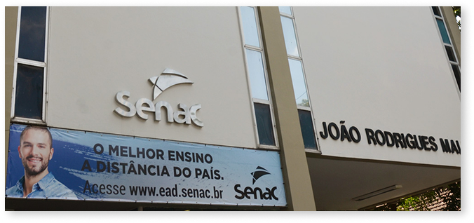
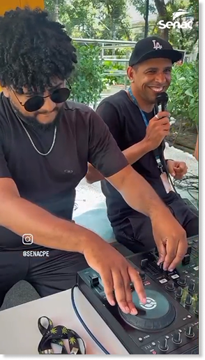
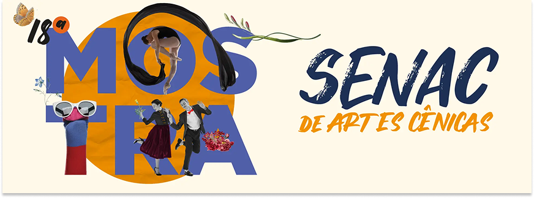
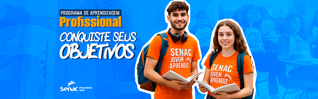
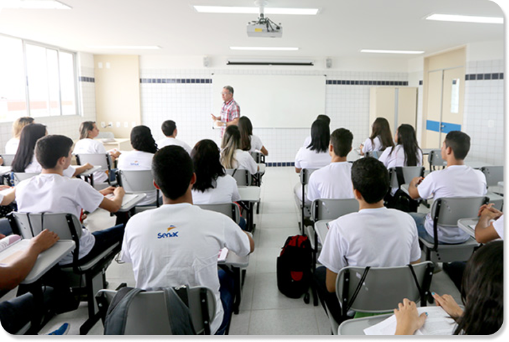
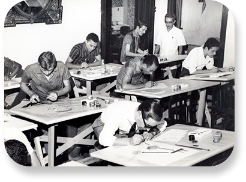

OLÁ, DOCENTE

Startê - A plataforma de acolhimento do Prédio
CFP da unidade Senac Recife


Projeto Integrador:
aprendizes
apresentam
soluções inovadoras
e sustentáveis

Oferece cursos nos
segmentos de Artes,
Conservação, Meio
Ambiente, Comunicação,
Tecnologia da Informação
(TI), Saúde, Segurança
e Gestão; entre outros.




O Programa Senac de
Gratuidade (PSG) é uma
iniciativa de inclusão
social que oferece vagas
gratuitas em cursos de
educação profissional
(da aprendizagem ao
nível técnico).

O Senac contribui com a formação
profissional de milhares de brasileiros,
oferecendo cursos de Formação Inicial e
Continuada, Educação Profissional
Técnica de Nível Médio, de Nível Superior